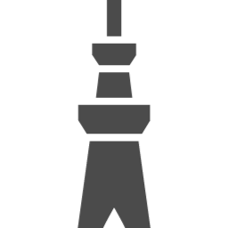

Tokyo Crypto Day
Welcome to Tokyo Crypto-Park
Home / About
- About the left image
Created by modifying Tokyo Koishikawa Korakuen Garden:
© Tokyo Metropolitan Park Association.
This work is licensed under a Creative Commons Attribution 4.0 International License. See FIND/47.
Created by modifying Tokyo Koishikawa Korakuen Garden:
© Tokyo Metropolitan Park Association.
This work is licensed under a Creative Commons Attribution 4.0 International License. See FIND/47.
Related Events
- nycryptoday
- Charles River Crypto Day
- DC AREA CRYPTO DAY
- Bay Area Crypto Day
- GTACS
- Paris Crypto Day
- London Crypto Day
Timeline: Past
About Us
The Tokyo Crypto Day is a half-day (or full-day) of cryptography talks in the Tokyo area.
Organizer(s):
- Ryo Nishimaki (NTT Secure Platform Laboratories)
Contact Info.
- tokyo dot cryptoday at gmail dot com